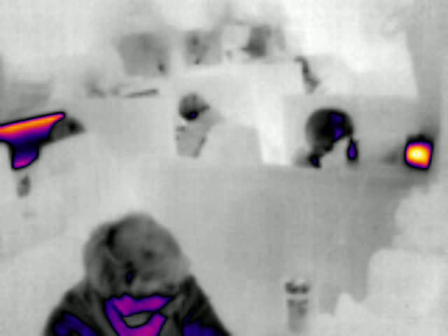
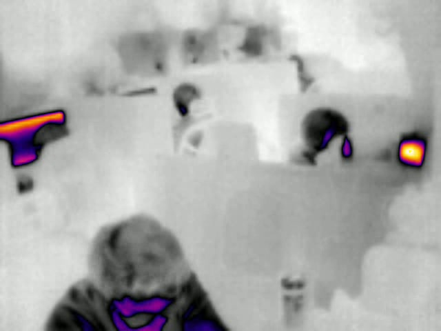
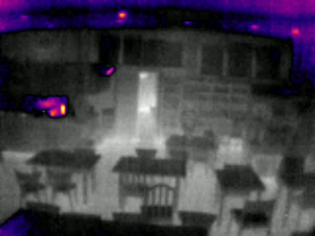
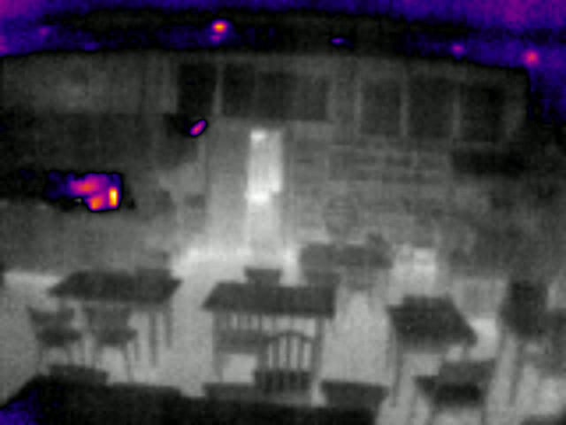
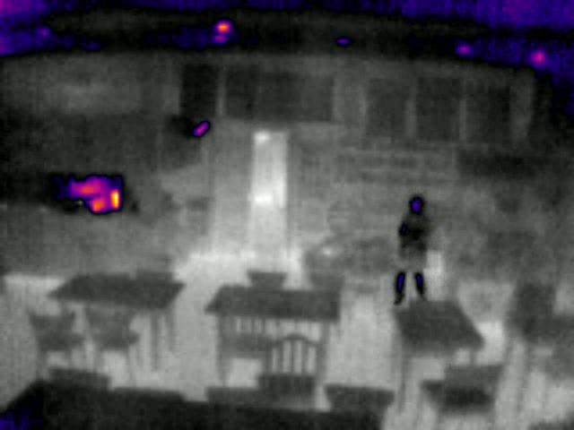
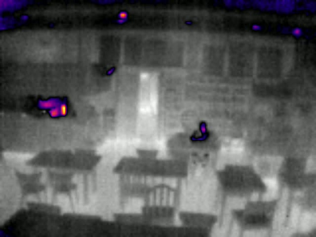

Master's thesis · National Tsing Hua University
Smart Public Transport with Deep Learning
Counting bus passengers in real time with a thermal camera and a Raspberry Pi — so riders know how many seats are free. Works day and night, and never captures a face.
LIVE · thermal inference







A custom thermal dataset and two detectors, benchmarked for the edge
I recorded IR footage with a FLIR Lepton 3.5 on a campus shuttle bus, annotated it by hand, and trained Faster R-CNN and SSDLite with transfer learning — then tested which one could actually run on a Raspberry Pi.
0annotated thermal frames
0labelled boxes
0object classes
TensorFlow OD APIFaster R-CNNSSD MobileNet v2Raspberry PiFLIR Lepton 3.5HDF5
View code on GitHub →
📷
Capture
Lepton 3.5 LWIR camera on a Raspberry Pi
🗂️
Record
Radiometric frames to HDF5
🏷️
Annotate
Segment + label 9 classes
🧠
Train
Transfer learning on GPU, 200k steps
🚌
Deploy
Edge inference → free-seat count